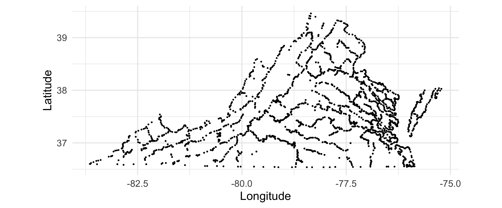
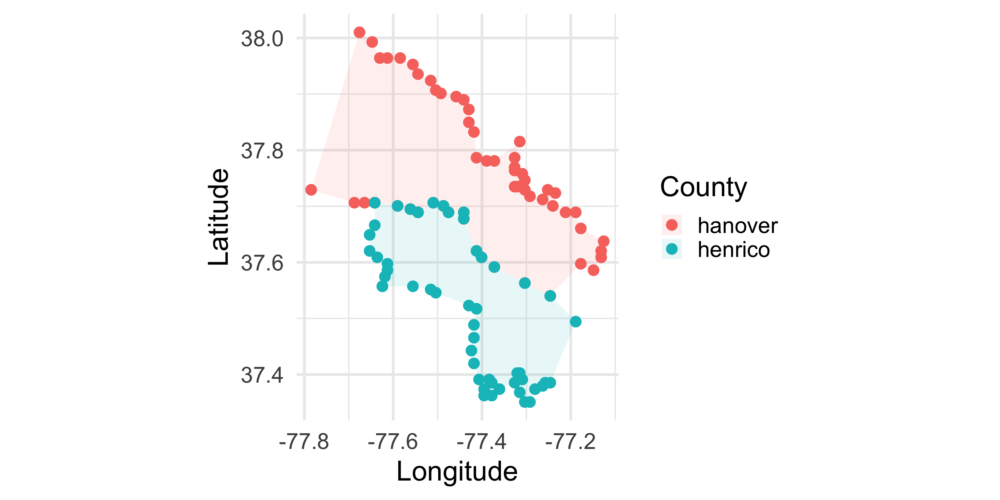
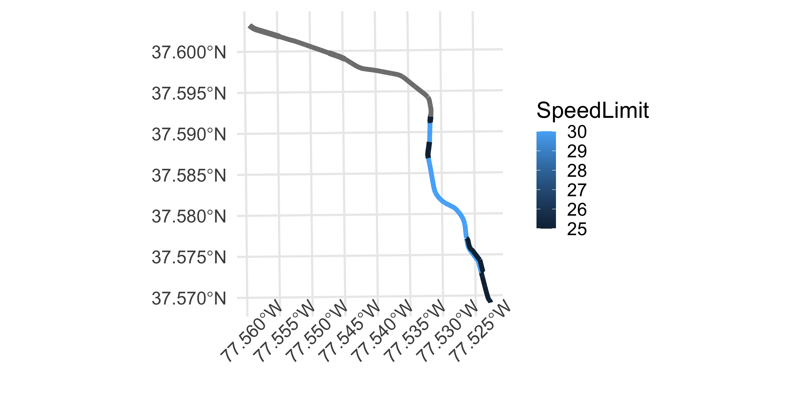
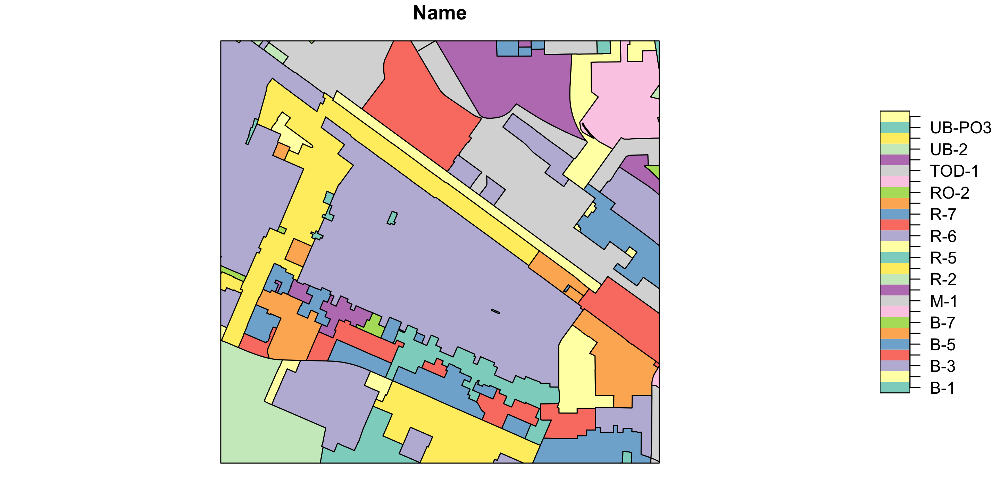
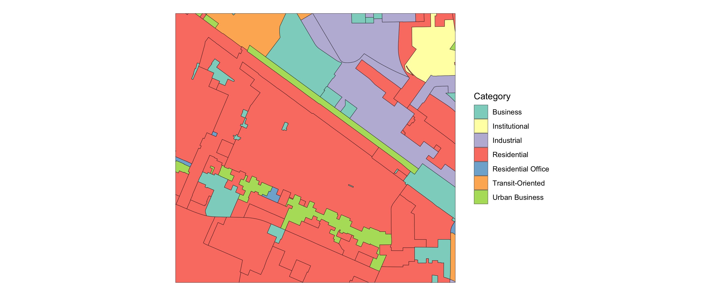

id Data Longitude Latitude
1 Rodney 98.759269 -78.48553 35.66016
2 Rodney 49.790138 -78.77618 35.55627
3 Rodney 60.124115 -78.19129 37.35197
4 Rodney 33.994487 -77.69823 37.11616
5 Rodney 1.194861 -77.94678 38.75742
6 Sarah 74.258820 -77.90507 36.81489
7 Sarah 34.504144 -78.22234 38.30332
8 Sarah 41.818465 -77.80990 35.94615
9 Sarah 111.708637 -77.69536 36.26706
10 Sarah 14.447750 -78.98146 38.77788Vector Data
Rodney Dyer, PhD
Learning Objectives
This section covers the following topics:
Creation of
sf::LINESTRINGandsf::MULTIPOLYGONobjects from raw data.Loading map polygons from
map_data()Building buffers, unions, and hulls around sampling locations.
Measuring land cover inside polygons.
Importing data from ESRI shapefile.
Implementing Spatial Joins.
Lines
Data Sources: De novo Creation
It is possible to make data from scratch by entering coordinates directly.
Data Sources: De novo Creation
To make them into sf POINT objects, use st_as_sf() as normal.
Simple feature collection with 10 features and 2 fields
Geometry type: POINT
Dimension: XY
Bounding box: xmin: -78.98146 ymin: 35.55627 xmax: -77.69536 ymax: 38.77788
Geodetic CRS: WGS 84
id Data geometry
1 Rodney 98.759269 POINT (-78.48553 35.66016)
2 Rodney 49.790138 POINT (-78.77618 35.55627)
3 Rodney 60.124115 POINT (-78.19129 37.35197)
4 Rodney 33.994487 POINT (-77.69823 37.11616)
5 Rodney 1.194861 POINT (-77.94678 38.75742)
6 Sarah 74.258820 POINT (-77.90507 36.81489)
7 Sarah 34.504144 POINT (-78.22234 38.30332)
8 Sarah 41.818465 POINT (-77.8099 35.94615)
9 Sarah 111.708637 POINT (-77.69536 36.26706)
10 Sarah 14.447750 POINT (-78.98146 38.77788)Plotting Points
We can easily mix individual aesthetic properties to change the representation of the points provided by using geom_sf().

Data Sources: De novo Creation
To make sf as LINESTRING we can group by the id value and then we need to summarize the Data component, then cast it to a Linestring.
Simple feature collection with 2 features and 2 fields
Geometry type: LINESTRING
Dimension: XY
Bounding box: xmin: -78.98146 ymin: 35.55627 xmax: -77.69536 ymax: 38.77788
Geodetic CRS: WGS 84
# A tibble: 2 × 3
id Data geometry
<chr> <dbl> <LINESTRING [°]>
1 Rodney 48.8 (-78.48553 35.66016, -78.77618 35.55627, -77.69823 37.11616, -78…
2 Sarah 55.3 (-77.69536 36.26706, -77.8099 35.94615, -77.90507 36.81489, -78.…Visualizing Line Objects

Operations on LINESTRING Objects
Physical length of the LINESTRING objects.
Operations on LINESTRING Objects
The bounding box around all the lines.
Operations on LINESTRING Objects
The area of the convex hull encompassing all the lines.
Textual Versions of geometry
Any geometry can be written out as Well Known Text (WKT), a plain-text description of its shape and coordinates.
Polygons
Polygons
Polygons are simply lines whose first and last coordinate are exactly the same.
id Data Longitude Latitude
1 Rodney 98.759269 -78.48553 35.66016
2 Rodney 49.790138 -78.77618 35.55627
3 Rodney 60.124115 -78.19129 37.35197
4 Rodney 33.994487 -77.69823 37.11616
5 Rodney 1.194861 -77.94678 38.75742
1.1 Rodney 98.759269 -78.48553 35.66016
6 Sarah 74.258820 -77.90507 36.81489
7 Sarah 34.504144 -78.22234 38.30332
8 Sarah 41.818465 -77.80990 35.94615
9 Sarah 111.708637 -77.69536 36.26706
10 Sarah 14.447750 -78.98146 38.77788
6.1 Sarah 74.258820 -77.90507 36.81489Polygon de novo Creation
Use st_cast() as before to make groups of points into a polygon.
Simple feature collection with 2 features and 2 fields
Geometry type: POLYGON
Dimension: XY
Bounding box: xmin: -78.98146 ymin: 35.55627 xmax: -77.69536 ymax: 38.77788
Geodetic CRS: WGS 84
# A tibble: 2 × 3
id Data geometry
<chr> <dbl> <POLYGON [°]>
1 Rodney 48.8 ((-78.48553 35.66016, -78.77618 35.55627, -77.69823 37.11616, -7…
2 Sarah 55.3 ((-77.69536 36.26706, -77.8099 35.94615, -77.90507 36.81489, -78…Visualizing Polygon Objects

Polygons From Data Frames
The ggplot library provides access to map data as well.
Polygons From Data Frames



Combining polygons and sf objects

Buffers & Neighborhoods
Dogwood Trees
Maternal dogwood trees sampled from the city of Richmond south to Pocahontas State Park. We start with the 15 Preliminary trees (5 per Habitat), sorted south to north.
Buffers & areas use the CRS units: reproject to meters (UTM 17N) first!
Simple feature collection with 15 features and 4 fields
Geometry type: POINT
Dimension: XY
Bounding box: xmin: 806108.1 ymin: 4143052 xmax: 813281 ymax: 4157384
Projected CRS: WGS 84 / UTM zone 17N
# A tibble: 15 × 5
Mother Habitat Tree N geometry
* <chr> <chr> <chr> <dbl> <POINT [m]>
1 Native Native 361PWP 8 (806266.9 4143052)
2 Native Native 1040PWP 6 (807125.6 4143721)
3 Native Native 1037PWP 7 (807081.4 4144079)
4 Native Native 1033PWP 19 (806948.1 4144545)
5 Native Native 1081PWP 19 (806431.8 4144768)
6 Cultivar Suburban 112UWP 16 (810517.8 4146580)
7 Cultivar Suburban 134UWP 16 (806108.1 4147837)
8 Cultivar Suburban 120UWP 15 (808713.1 4148056)
9 Cultivar Suburban 116UWP 15 (809010.9 4148151)
10 Cultivar Suburban 108UWP 18 (809728.6 4148875)
11 Cultivar Urban 102UWP 18 (812583.7 4154036)
12 Cultivar Urban 109UWP 24 (811825.4 4155407)
13 Cultivar Urban 103UWP 13 (812417.7 4156191)
14 Cultivar Urban 125UWP 17 (813281 4157297)
15 Cultivar Urban 105UWP 15 (811922.1 4157384)Plot the Trees

Buffers
Everything within some distance of a feature. Buffering a POINT makes a POLYGON.
Units: [m^2]
[1] 196259.8 196259.8 196259.8Unions
summarize() on an sf object unions the geometries in each group.
Units: [km^2]
[1] 0.9470074 0.9303691 0.9812992Five buffers would be 0.98 km²; overlaps are only counted once.
Convex Hulls
The smallest convex polygon around a set of points (a rubber band).
A Transect Corridor
Trees are sorted south to north, so the ends are the first and last rows (the function slice() allows us to pull specific rows based on index).
A Transect Corridor
How long is the transect?
A Transect Coorridor
Let’s visualize it by adding a quick buffer around it.

In-Class Activity: Part 1
Land Cover
National Land Cover Database
NLCD: every 30 m × 30 m cell of the US classified into land cover (water, developed, forest, wetlands, agriculture, …).
Land Cover in Each Neighborhood
# A tibble: 105 × 6
Mother Habitat Tree N Category Proportion
<chr> <chr> <chr> <dbl> <chr> <dbl>
1 Native Native 361PWP 8 Water 0.110
2 Native Native 361PWP 8 Developed 0.00459
3 Native Native 361PWP 8 Barren 0
4 Native Native 361PWP 8 Forest 0.786
5 Native Native 361PWP 8 Shrub/Grass 0.00459
6 Native Native 361PWP 8 Agriculture 0
7 Native Native 361PWP 8 Wetland 0.0956
8 Native Native 1040PWP 6 Water 0
9 Native Native 1040PWP 6 Developed 0
10 Native Native 1040PWP 6 Barren 0
# ℹ 95 more rowsSummarize by Habitat
Why .groups = "drop"?
summarize() only peels off the last grouping variable (Category), so without it the result is still grouped by Habitat, and dplyr prints a message telling you so.
`summarise()` has regrouped the output.
ℹ Summaries were computed grouped by Habitat and Category.
ℹ Output is grouped by Habitat.
ℹ Use `summarise(.groups = "drop_last")` to silence this message.
ℹ Use `summarise(.by = c(Habitat, Category))` for per-operation grouping
(`?dplyr::dplyr_by`) instead.[1] "Habitat"We reuse habitat_lc for a table, a plot, and a comparison with the transect. A leftover grouping would quietly change how any later mutate() or summarize() works on it. .groups = "drop" hands back a plain, ungrouped table.
Pivoting the Data
We have the normal tidy output of data.
# A tibble: 6 × 3
Habitat Category Proportion
<chr> <chr> <dbl>
1 Native Agriculture 0.00643
2 Native Barren 0.00367
3 Native Developed 0.0527
4 Native Forest 0.780
5 Native Shrub/Grass 0.00213
6 Native Water 0.0219 Summarize by Habitat
| Category | Native | Suburban | Urban |
|---|---|---|---|
| Agriculture | 0.006 | 0.016 | 0.001 |
| Barren | 0.004 | 0.000 | 0.000 |
| Developed | 0.053 | 0.739 | 0.980 |
| Forest | 0.780 | 0.085 | 0.019 |
| Shrub/Grass | 0.002 | 0.008 | 0.000 |
| Water | 0.022 | 0.002 | 0.000 |
| Wetland | 0.133 | 0.150 | 0.000 |

In-Class Activity: Part 2
Shapefiles 🤷
Shapefiles
The ESRI Shapefile is a non-standardized format for packaging vector based data (POINT, LINESTRING, POLYGON, etc.).
However, it is not actually a file but it is a collection of files, which may (or may not) expand directly in the folder or within a subfolder.

Archived ZIP Files.
I’ve put some shapefiles in the course data repository. These are from the Richmond City GIS Department and represent the centerlines of roads in the city as well as the zoning districts.
Here are the URL’s for both of these files.
Downloading Files Using R
You can use your browser and copy and paste those addresses in to download the files to your computer. Then you’ll have to move those archives to your PROJECT FOLDER (you are using Projects right?).
Unzipping Files
You can open your computer finder and have the OS unzip the archives.
OR
You can have R do it.
File Components

The Projection File

Loading A Shapefile
You can load it in using sf::st_read() and passing it the .shp file path to it.
Reading layer `Zoning_Districts' from data source
`/private/var/folders/ph/r0036_7d65x3k680vc73qbj40000gn/T/RtmpYUAp54/Zoning_Districts.shp'
using driver `ESRI Shapefile'
Simple feature collection with 634 features and 14 fields
Geometry type: MULTIPOLYGON
Dimension: XY
Bounding box: xmin: 11743500 ymin: 3687944 xmax: 11806060 ymax: 3744741
Projected CRS: NAD83 / Virginia South (ftUS)Shapefiles Convert to sf Objects
By default, the data associated with a vector object are put into a data.frame and the geometry object is properly created.
Simple feature collection with 2 features and 14 fields
Geometry type: MULTIPOLYGON
Dimension: XY
Bounding box: xmin: 11773600 ymin: 3730159 xmax: 11789510 ymax: 3731016
Projected CRS: NAD83 / Virginia South (ftUS)
OBJECTID Name Ordinance OrdinanceP Conditiona AdoptionDa Comment
1 1 RO-2 <NA> <NA> No 2000-01-01 <NA>
2 2 B-2 <NA> <NA> No 2000-01-01 <NA>
CreatedBy CreatedDat EditBy EditDate
1 richard.morton_cor 2020-08-24 richard.morton_cor 2020-08-24
2 richard.morton_cor 2020-08-24 richard.morton_cor 2020-08-24
GlobalID Shape__Are Shape__Len
1 334799f0-fe38-46bf-97c2-260f5a036559 60150.29 983.6815
2 558df9cd-4f9c-4248-a689-bc2d9c79d060 56987.01 971.8832
geometry
1 MULTIPOLYGON (((11773598 37...
2 MULTIPOLYGON (((11789222 37...Simplifying Data
Simplifying Data
Simple feature collection with 1 feature and 7 fields
Geometry type: MULTIPOLYGON
Dimension: XY
Bounding box: xmin: 11773600 ymin: 3730159 xmax: 11773940 ymax: 3730493
Projected CRS: NAD83 / Virginia South (ftUS)
OBJECTID Name Ordinance OrdinanceP Conditiona AdoptionDa
1 1 RO-2 <NA> <NA> No 2000-01-01
GlobalID geometry
1 334799f0-fe38-46bf-97c2-260f5a036559 MULTIPOLYGON (((11773598 37...District Codes
[1] "B-1" "B-2" "B-3" "B-4" "B-5" "B-6" "B-7"
[8] "CM" "DCC" "I" "M-1" "M-2" "OS" "R-1"
[15] "R-2" "R-3" "R-4" "R-43" "R-48" "R-5" "R-53"
[22] "R-6" "R-63" "R-7" "R-73" "R-8" "R-MH" "RF-1"
[29] "RF-2" "RO-1" "RO-2" "RO-3" "RO2-PE2" "RO2-PE4" "RP"
[36] "TOD-1" "UB" "UB-2" "UB-PE2" "UB-PE3" "UB-PE4" "UB-PE5"
[43] "UB-PE6" "UB-PE7" "UB-PE8" "UB-PO1" "UB-PO2" "UB-PO3" "UB-PO4"
[50] "UB2-PE8"Visualizing

Visualizing Overlays

Vector Operations
Spatial Joins
We can combine spatial data sets by where their features are (intersect, touch, contain, within some distance) instead of by a shared column. These are spatial joins.
There are a wide variety of operations available:
Secondary Vector Data Set
Reading layer `tran_Carriageway' from data source
`/private/var/folders/ph/r0036_7d65x3k680vc73qbj40000gn/T/RtmpYUAp54/Centerlines-shp/tran_Carriageway.shp'
using driver `ESRI Shapefile'
Simple feature collection with 29081 features and 25 fields
Geometry type: LINESTRING
Dimension: XY
Bounding box: xmin: 11734060 ymin: 3682790 xmax: 11817490 ymax: 3751927
Projected CRS: NAD83 / Virginia South (ftUS)Secondary Vector Data Set
[1] "FID" "Carriagewa" "AssetID" "StreetType" "Functional"
[6] "FIPS" "LeftFromAd" "LeftToAddr" "RightFromA" "RightToAdd"
[11] "PrefixDire" "ProperName" "SuffixType" "SuffixDire" "FullName"
[16] "RouteName" "OneWay" "PostedSpee" "CADRouteSp" "CreatedBy"
[21] "CreatedDat" "EditBy" "EditDate" "GlobalID" "SHAPE_Leng"
[26] "geometry" Check Projections
Dyer’s First Rule: Make Sure Projections Are the Same
Data Cleanup
FullName OneWay StreetType SpeedLimit
Length:29081 1 : 2 Alley : 3139 Min. : 0.00
Class :character FT : 3225 Artery : 5201 1st Qu.:25.00
Mode :character TF : 3148 Highway : 384 Median :25.00
NA's:22706 Highway Interchange: 93 Mean :25.17
Private : 1540 3rd Qu.:25.00
Ramp : 378 Max. :55.00
Secondary :18346 NA's :7959
Length geometry
Min. : 2.943 LINESTRING :29081
1st Qu.: 164.849 epsg:2284 : 0
Median : 292.517 +proj=lcc ...: 0
Mean : 379.338
3rd Qu.: 461.146
Max. :17851.326
Visualizing: Filter Highways & Plot
FullName OneWay StreetType SpeedLimit
Length:855 1 : 0 Alley : 0 Min. : 0.00
Class :character FT :416 Artery : 0 1st Qu.:25.00
Mode :character TF :408 Highway :384 Median :25.00
NA's: 31 Highway Interchange: 93 Mean :36.19
Private : 0 3rd Qu.:55.00
Ramp :378 Max. :55.00
Secondary : 0 NA's :131
Length geometry
Min. : 14.46 LINESTRING :855
1st Qu.: 276.48 epsg:2284 : 0
Median : 726.13 +proj=lcc ...: 0
Mean : 1055.15
3rd Qu.: 1170.35
Max. :17851.33
Plot It
Let’s color this based upon SpeedLimit

Visualizing A Single Entity

Intersection Plotting
Let’s grab a bit of zoning from The Fan

Zoning Categories
26 zoning codes is too many to map. Make it a factor and collapse the levels with fct_collapse() (from Factors): New Level = Old Levels.
theFan |>
mutate(
Name = factor(Name),
Category = fct_collapse(
Name,
Residential = c(
"R-2",
"R-48",
"R-5",
"R-53",
"R-6",
"R-63",
"R-7",
"R-73"
),
`Residential Office` = c("RO-2", "RO-3"),
Business = c(
"B-1",
"B-2",
"B-3",
"B-4",
"B-5",
"B-6",
"B-7"
),
`Urban Business` = c(
"UB",
"UB-2",
"UB-PO2",
"UB-PO3",
"UB-PO4"
),
Industrial = c("M-1", "M-2"),
Institutional = "I",
`Transit-Oriented` = "TOD-1"
)
) |>
select(OBJECTID, Name, Category, everything()) -> theFan OBJECTID Name Category Ordinance
Min. : 5.0 R-7 :11 Business :22 Length:91
1st Qu.: 270.5 R-53 : 9 Institutional : 1 Class :character
Median : 377.0 R-6 : 9 Industrial : 7 Mode :character
Mean : 498.3 B-1 : 7 Residential :46
3rd Qu.: 505.0 R-63 : 5 Residential Office: 4
Max. :1872.0 R-73 : 5 Transit-Oriented : 2
(Other):45 Urban Business : 9
OrdinanceP Conditiona AdoptionDa GlobalID
Length:91 Length:91 Min. :2000-01-01 Length:91
Class :character Class :character 1st Qu.:2000-01-01 Class :character
Mode :character Mode :character Median :2001-10-08 Mode :character
Mean :2005-06-16
3rd Qu.:2008-02-18
Max. :2020-02-24
geometry
MULTIPOLYGON : 4
POLYGON :87
epsg:2284 : 0
+proj=lcc ...: 0

Cropping Roads

Selecting a Single Zone
Add an attribute to the POLYGON’s indicating if the district is that big one in the middle of the plot. Let’s plot it to see what the ID is.
Plot it

Isolate the District

Keep the roads that intersect the target with st_filter().
Street Name
1 Allison St
2 Birch St
3 Boyd St
4 Floyd Ave
5 Grove Ave
6 Hanover Ave
7 Kensington Ave
8 Lombardy Pl
9 Madumbie Lane
10 Monument Ave
11 N Allen Ave
12 N Arthur Ashe Blvd
13 N Brunswick St
14 N Davis Ave
15 N Granby St
16 N Harrison St
17 N Harvie St
18 N Lombardy St
19 N Meadow St
20 N Morris St
21 N Mulberry St
22 N Plum St
23 N Robinson St
24 N Rowland St
25 N Shields Ave
26 N Stafford Ave
27 N Vine St
28 Park Ave
29 Ryland St
30 S Plum St
31 S Stafford Ave
32 Strawberry St
33 Stuart Ave
34 Stuart Cir
35 Trouvaille Al
36 W Franklin St
37 W Main St
38 West Ave
39 <NA>
Joining Attributes: st_join()
Each road segment picks up the columns of the district(s) its geometry intersects.
Cutting Features: st_intersection()
Keep only the parts that overlap; e.g., km of road inside the target.